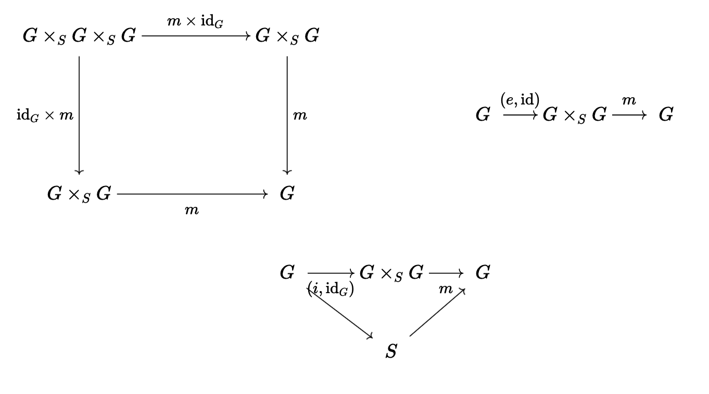

Algebraic Geometry Spring 2022
Table of Contents
\( \newcommand{\contra}{\Rightarrow\!\Leftarrow} \newcommand{\R}{\mathbb{R}} \newcommand{\F}{\mathbb{F}} \newcommand{\Z}{\mathbb{Z}} \newcommand{\Zeq}{\mathbb{Z}_{\geq 0}} \newcommand{\Zg}{\mathbb{Z}_{>0}} \newcommand{\Req}{\mathbb{R}_{\geq 0}} \newcommand{\Rg}{\mathbb{R}_{>0}} \newcommand{\N}{\mathbb{N}} \newcommand{\Q}{\mathbb{Q}} \newcommand{\O}{\mathcal{O}} \newcommand{\C}{\mathbb{C}} \newcommand{\A}{\mathbb{A}} \newcommand{\P}{\mathbb{P}} \DeclareMathOperator{\Spec}{Spec} \DeclareMathOperator{\id}{id} \DeclareMathOperator{\Proj}{Proj} \DeclareMathOperator{\Ob}{Ob} \DeclareMathOperator{\Mor}{Mor} \DeclareMathOperator{\Hom}{Hom} \DeclareMathOperator{\colim}{colim} \DeclareMathOperator{\length}{length} \DeclareMathOperator{\Pic}{Pic} \)
1. Very short introduction on schemes
We start with the notion of schemes.
We have a few layers in order to build schemes: We move Topological Spaces \(\leftarrow\) Ringed Spaces\((X, \mathcal O_X)\) \(\leftarrow\) locally ringed spaces \(X, \mathcal O_X\) where sheafs of \(\mathcal O_X\) are local rings, where the left arrow is forgetful. Then, schemes are any locally ringed space which is locally an affine space. Furthermore, we must get some subcategory of affine schemes which is anti-equivalent to the category of rings via Spec.
1.1. The Spectrum of a ring as a locally ringed space.
We have some association \(A\) some ring \(\rightarrow \Spec(A)\) with some features:
- The basis for the topology are the opens \(D(a)\)
- If \(a = a'a''\) in \(A\) then
- \(D(a) \subset D(a')\)
- There is a canonical map \(A_a \leftarrow A_{a'}\) where \(\frac{(a'')^nx}{a^n} \mapsto \frac{x}{(a')^n}\)
Two remarks: the converse of 2.a does not hold; secondly, if \(M\) is a \(A\)-module, the map in 2.b extends to \(M_a \leftarrow M_{a'}\) and the maps are independent of the choice of \(a''\).
Lemma: The structure sheaf of \(\Spec(A)\): there exists a sheaf of rings \(\mathcal O_{\Spec(A)}\) such that
- For \(a \in A\) there exists a canonical isomorphism \(c_a: A_a \rightarrow \mathcal O_{\Spec(A)}(D(a))\).
- If \(a = a'a''\) then the following diagram commutes:

Pf: Use either stalks (Hartshorne) or the fact that \(D(a)\) (Stacks Project) are a basis for the topology and general facts about sheaves on bases.
Ex: Let \(X = (\Spec(A), \mathcal O_{\Spec(A)}\), and \(D(a_1) \cup D(a_2) = U \subset X\) open. Then we get the exact sequence
\begin{gather*} 0 \rightarrow \mathcal O_X(U) \rightarrow O_X(D(a_1)) \times O_X(D(a_2)) \rightarrow \mathcal(O)_X(D(a_1a_2)) \\ 0 \rightarrow kernel \rightarrow A_{a_1} \times A_{a_2} \rightarrow A_{a_1a_2} \\ 0 \rightarrow k[x,y] \rightarrow k[x,y,x^{-1}] \times k[c,y,y^{-1}] \rightarrow k[x,y,(xy)^{-1}] \end{gather*}The far map on the right takes \(F(U_1) \times F(U_2) \rightarrow F(U_1) \cap F(U_2)\) where \(s_1 \times s_2 \mapsto s_1|_{U_1 \cap U_2} - s_2|_{U_1 \cap U_2}\); that is, we take the difference.
Key algebra fact: if \(a_1, \dots, a_n\) generates the unit ideal, then \[ 0 \rightarrow A \rightarrow \prod_{i=1}^n A_{a_i} \rightarrow \prod_{i,j=1}^n A_{a_ia_j} \] is exact.
We can make an observation: the maps \(c_a\) determine isomorphisms \(A_\mathfrak p \rightarrow \mathcal O_{\Spec(A), \mathfrak p}\), the stalk of \(\mathcal O_{\Spec(A)}\) at the point \(\mathfrak p\), which by definition is the filtered colimit \(\colim_{\mathfrak p \in U \in \Spec(A)} \mathcal O_{\Spec(A)}(U)\). Note that we can take the colimit over \(D(a)\) and thus we get that there is a mapping from \(\colim_{a \in \mathfrak p} A_a\).
Corollary: \(\Spec(A), \mathcal O_{\Spec(A)}\) is a locally ringed space.
Def: A ringed space \(X, \mathcal O_X\) is a locally ringed space if every stalk of \(\mathcal O_X\) is a local ring. Let \((f, f^\#) : (X, \mathcal O_X) \rightarrow (Y, \mathcal O_Y)\) of ringed spaces. If \(f: X \rightarrow Y\) is continuous, you can think of \(f^\#: O_Y \rightarrow f_*\mathcal O_X\) (the push-forward of a sheaf) or as a map \(f^\#: f^{-1}\mathcal O_Y \rightarrow \mathcal O_X\) where \(f^{-1}\) is the pull-back (really, think of the push-back as an adjoint functor to the puhs-forward).
In some sense, think of \(f^\#\) as a rule that to each open \(U \subset X\) open and \(V \subset Y\) open with \(f(U) \subset V\) associates a map \((f^\#)^U_V: \mathcal O_Y(V) \rightarrow O_X(U)\) compatible with all restriction maps.
Thus, for all \(x \in X\) we get an induced map \(f^\#_x: \mathcal O_{Y, f(x)} \rightarrow \mathcal O_{X, x}\), where an element of \(\mathcal O_{Y, f(x)}\) is a “function” \(h \in \mathcal O_Y(V)\) determined on some \(f(x) = V \subset Y\) open, and then gets mapped to \((f^\#)^U_V(h)\) where \(x \in U \subset X\) open such that \(f(U) \subset V\).
Def: If \((X, \mathcal O_X)\) and \((Y, \mathcal O_Y\) are locally ringed spaces, then \(f, f^\#\) is a morphism of locally ringed spaces iff \(f^\#_X\) is a local homomorphism \(\forall x \in X\).
Lemma: Let \(\varphi: A \rightarrow B\) be a ring map. There is a morphism of locally ringed spaces \(\Spec(\varphi), \Spec(\varphi)^\#\): \((\Spec(B), \mathcal O_{\Spec(B)}) \rightarrow (\Spec(A), \mathcal O_{\Spec(A)})\) such that given \(a \in A\) the diagram

commutes. In fact every such morphism arises as such a mapping induced by a ring homomorphism.
Let \(X\) be a scheme, \(x \in X\). Then, there exists \(x \in U \subset X\) open such that \(U\) is an affine scheme; that is, \(x \subset U (\Spec(A), \mathcal O_{\Spec(A)})\); but we can consider the restriction \((\Spec(A_a), \mathcal O_{\Spec(A)})\).
Thus, we see that on a scheme the opens which are affine form a basis for the topology; (but note that intersections of affine opens need not be affine).
Ex: Projective space.
Consider an algebraically closed field \(k\) and a nonnegative integer \(n\). Then, the (classical) projective plane is simply \[ \P^n(k) = (k^{n+1} - \{0\})/k^* \] Alternatively, we can take \(\P^n(k)\) the union over subsets of points such that \(x_i \neq 0\), which yields a bijection from the affine \(n\)-space over \(k\).
Def: A closed subset \(E\) of \(\P^n(k)\) is a subset such that \(E \cap U_i\) is closed in the Zarisky topology of \(U_i - \A^n(k) = k^n\).
Ex: Say \(F \in k[T_0, \dots, T_n\) is homogenous of degree \(d\). Then \[ V_+(F) = E = \{(x_0:\dots:x_n) \in \P^(k)\} \text{ such that } F(x_0, \dots, x_n) = 0 \] is a closed subset: \[ V_+(F) \cap U_i = \{(a_1, \dots, a_n) \in k^n \mid F(x_0, \dots, 1, \dots, x_n) = 0\} \]
Equivalently, we may see that every closed \(E \subset \P^n(k)\) is of the form \[ E = V_+(F_1) \cap \dots \cap V_+(F(t)) \] for some \(F_1, \dots, F_t \in k[T_0, \dots, T_n]\). The idea here is to have some correspondence

Def: We define the projective space as a scheme over a ring \(R\) as \[ \P^n_R = \Proj(R[T_0, \dots, T_n]) = \{\mathfrak p \subset R[T_0, \dots, T_n] \text{ homogenous prime ideals with } \mathfrak p \not\supset (T_0, \dots, T_n)\} \]
Note that the classical point \((x_1:\dots:x_n)\) corresponds to a line \(p = (x_iT_j - x_jT_i)\).
Lemma: Fix \(0 \leq i \leq n\). There is a bijection \[ U_i = \{\mathfrak p \subset R[T_0, \dots, T_n] \text{ homogenous prime}, T_i \notin \mathfrak p\} \leftrightarrow \{\mathfrak P_o \subset R[\frac{T_0}{T_i}, \dots, \frac{T_n}{T_i}] \text{ prime}\} = \Spec R[\frac{T_0}{T_i}, \dots, \frac{T_n}{T_i}] \] where \[ \mathfrak p \mapsto \mathfrak p R[T_0, \dots, T_n, \frac{1}{T_i}] \cap R[\frac{T_0}{T_i}, \dots, \frac{T_n}{T_i}] \] such that we may think of \[ \P^n_R = \bigcup_{i=0}^nU_i = \bigcup_{i=1}^n \Spec R[T_0, \dots, T_n, \frac{1}{T_i}] \] and more generally, \(F \in R[T_0, T_n\) homogenous of poisitive degree can be thought of as \[ D_+(F) = \Spec(R[T_0, \dots, T_n]_{(F)}) \] where \(R[T_0, \dots, T_n]_{(F)}\) is the set of degree 0 elements of \(R[T_0, \dots, T_n, \frac{1}{F}]\), which is \(R[\frac{T_0}{T_i}, \dots, \frac{T^n}{T_i}]\).
Topological, if \(\Omega \subset R[T_0, \dots, T_n]\) is a subset of homogenous elemeents, then \[ V_+(\Omega) = \{\mathfrak p \in \P^n_R \mid \Omega \subset \mathfrak p\} \]
- These form closed subsets of a topology
- The basis for the topology are \(D_+(F) = \P^n_R - V_+(F)\)
- \(U_i = D_+(T_i) \cong \A^n_R = \Spec(R[\frac{T_0}{T_i}, \dots, \frac{T^n}{T_i}])\)
To identify the sheaf of rings, we can start with \(\mathcal O_{\P_R^n}(D_+(F) = R[T_0, \dots, T_n]_(F)\) and then extend exactly as in the case of affine schemes.
Aside: Why is projective space interesting? We are sort of adding things at infinity!
- \(P^0(k)\) is one point.
- \(P^1(k) = D_+(T_0) \sqcup V+(T_0)\) is a line with a point at infinity.
- \(P^2(k) = \A^2(l) \sqcup \P(k)\) is a plane with a line and a point at infinity.
Def: Let \(R\) be a ring. A projective scheme over \(R\) is a scheme \(X\) equipped with a morphism \(X \rightarrow \Spec(R)\) such that there exists an \(n > 0\) and a closed immersion \[ X \rightarrow \P^n_R \] of schemes over \(R\).
If \(e\) is a category and \(s \in \Ob(e)\), we can consider th category \(e/s\) of “objects over \(S\)”.
- Objects are arrows \(X \rightarrow S\)
Morphisms \(X/S \rightarrow Y/S\) are morphisms \(f: X \rightarrow Y\) in \(e\) such that the following diagram commutes:

- schemes over \(R\) are schemes over \(\Spec(R)\).
Fact: The category of schemes over \(R\) is what you get when you replace the definition of the category of schemes, replacing ring with \(R\)-algebra everywhere; that is, scheme over \(R\) are schemes \((X, \mathcal O_X\) such that \(\mathcal O_x\) is given the structure of a sheaf of \(R\)-algebras.
Def: A morphism \(f: X \rightarrow Y\) of schemes is said to be affine, resp. finite, integral, a closed immersion iff
- for all \(V \subset Y\) affine open the inverse image \(U = f^{-1}(V) \subset X\) is affine
- the morphism \(f|_U: U \rightarrow V\) of affine schemes corresponds to a ring map \(A \rightarrow B\) which is abitrary, resp. finite, integral, surjective
Lemma: Let \(f: X \rightarrow Y\) be a morphism of schemes; let \(Y = \bigcup V_j\) be an affine open cover. Then, \(f\) is affine, resp. finite, integral, a closed immersion iff the earlier definition holds for each \(V_j\).
Example: \(\Spec(B) \rightarrow \Spec(A)\) is a closed immersion \(\iff\) \(B = A/I\) for some ideal \(I \subset A\).
Example (Fermat hypersurface): As a scheme, \(X: T_0^1 + \dots + T_n^1 = 0\) in \(\P^n_R\) (topologically, \(V_+(T_0^1 + \dots + T_n^1\)). Now we have some \(X \rightarrow \P^n_R\) with \(X \cap D_+(T_i) = \) the closed subscheme of \(\Spec(R[\frac{T_0}{T_i}, \dots, \frac{T_n}{T_i}])\) by taking \((\frac{T_0}{T_i})^d + \dots + 1 + \dots + (\frac{T_n}{T_i})^d = 0\). Algebraically, we can take this to mean that \[ X \cap D_+(T_i) = \Spec(R[\frac{T_0}{T_i}, \dots, \frac{T_n}{T_i}]) / (\frac{T_0}{T_i})^d + \dots + (\frac{T_n}{T_i})^d) = \Spec(R[t_0, \dots, t_n]) / (t_0^d + \dots + 1 + \dots + t_n^d) \]
The upshot is that if \(I \subset R[T_0, \dots, T_n]\) is a graded ideal (homogenous ideal) then we can construct a closed subscheme \(V_+(I) \rightarrow \P_R^n\) associated to \(I\).
We have a couple of facts:
- \(V_+(I_ = \Proj(R[T_0, \dots, T_n]/I)\) as a scheme
- Every closed subscheme \(X \subset \P^n_R\) is equal to \(V_+(I)\) as a scheme for some \(I\)
Def: A morphism \(f: X \rightarrow Y\) of schemes is locally of finite type iff for all \(U \subset X, V \subset Y\) affine open \(f(U) \subset V\) the corresponding ring map \((f^\#)^U_V: \mathcal O_y(V) \rightarrow \mathcal{O}_X(U)\) as a ring map of finite type.
Lemma: If for all \(x \in X\), there is some \(x \in U \subset X\), \(V \subset Y\) affine open, \(f(U) \subset V\) such that if \((f^\#)^U_V: \O_Y(V) \rightarrow \O_X(U)\) is of finite type, then \(f\) is of finite type.
Proof: Let \(U \subset X, V \subset Y\) be affine open, \(f(U) \subset V\). We have the following steps:
- For all \(x \in U\) pick \(x \in U_x \subset X, V_x \subset Y\) affine open, \(f(U_x) \subset V_x\) and \((f^\#)^{U_x}_{V_x}: \O_Y(V_x) \rightarrow \O_X(U_x)\) finite type.
We may assume \(U_X \subset U\).
Proof: Write \(U_x = \Spec(B_x)\). Then we may pick \(b_x \in B_x = \O_X(U_x)\) such that \(x in D(b_x) \subset U_x \cap U \subset U_x\). But we know that the mapping \(\O_Y(V_x) \rightarrow B_x\) is finite type, and the mapping \(B_x \rightarrow \O_X(D(b_x)) = (B_x)_{b_x}\) is a finite ring map due to localization.
Write \(U = \Spec(B)\). We may assume \(U_x = D(b_x)\) for some \(b_x \in B\).
Proof: Pick \(b_x \in B\) such that \(D(b_x) \subset U_x \subset U\). Correspondingly, we have some mapping \(b_x \in B \mapsto \overline{b}_x\), so \(D(\overline{b}_x = D(b_x)\), so we get that \(B_{b_x} \cong (B_x)_{\overline{b}_x}\).
Write \(V = \Spec(A)\). Then, we may assume \(V_x = D(a_x)\) for some \(a_x \in A\).
Proof: Repeat steps 2, 3 but now on \(Y\) and use the fact that \(\varphi: A \rightarrow B\) satisfies that \(\Spec(\varphi^-1(D(a))) = D(\varphi(a))\)
Put everything together: for all \(x \in U = \Spec(B)\), we have the following diagram:

We have another algebra fact: \(A \rightarrow B\) ring map for all \(\mathfrak q \subset B\) prime there exists \(b \in B, b \not\in \mathfrak q\) such that \(A \rightarrow B_b\) finite type then \(A \rightarrow B\) is of finite type.
The ideal for the algebra fact is that \(S = \{b: B_b \text{ is finite type over } A\}\) generates the unit ideal in \(B\), so pick \(b_1, \dots, b_m \in S\) and \(c_1, \dots, c_m \in B\) such that \(1 = b_1c_1 + \dots + b_mc_m\). For each \(j\) we have that there is some \(b_{j_1}, \dots, b_{j_{n_j}}\) such that \(B_{b_j}\) is generated by \(b_j, \frac{1}{b_j}, b_{j_1}, \dots, b_{j_{n_j}}\). Set now \(B'\) to be the \(A\)-subalgebra of \(B\) generated by \(b_1c_1, \dots, b_nc_n, b_{j_i}\). Then, we have

Note: the above holds for locally of finite presentation, locally quasi-finite, flat, smooth, etale, unramified, lci, etc.
2. Rational points and heights
Let \(K\) be a field, and suppose that given a set \(M = M_K\) and for each \(v \in M\) an absolute value \[ \| \cdot \| : K \rightarrow \R_{\geq 0} \] such that for all \(c \in K^*\) we have
- For all but finite many \(v \in M\), \(\| c \| _v = 1\)
- \(\prod_{v \in M} \| c\| _v = 1\)
and for only finitely many \(v \in M\) is \(\| \cdot \|_v\) archmedian.
A few more properties of heights will be discussed, pertaining to:
- Aboslute value
- Positivity
- Bounded
- Abelian varities
An absolute value here is just something satisfying the axioms of a norm.
Then, we get fucntions \(h_n: \P^n(K) \rightarrow \R \) satisfying our height axioms, by setting \[ h_n(x_0 : \cdots : x_n) = \log \left( \prod_{v \in M} \max_{i=0,\dots,n} \| x_i \|_v\right) \]
The key example here is \(K = \Q\) with \(M = \{\infty, 2, 3, 5, \dots\}\), with \[ \| p \|_p = p^{-1}, \| n \|_\infty = n \] and \(1\) for every other case 1.
We can check this: it is clear that the functions coincide, and we see that \[ h_{nm + n + m}(x \otimes y) = h_n(x) + h_n(y) \] reduces to \[ \max_{i, j}\| x_i y_j \|_v = (\max_i \|x_i\|_v)(\max_j \|y_j\|_v) \] which holds, and so the first axiom holds. For the second axiom, we need to show that \[ \log \left( \prod_v \max ( \| x_0 \|_v, \dots, \|x_n\|_v)\right) - \log \left( \prod_v \max ( \| x_0 \|_v, \dots, \| \lambda x_i \|, \dots, \|x_n\|_v) \right) \] is bounded. But on inspection, this difference is at most \(\log ( \| \lambda \|_v)\). So we are good. The second part is more annoying, however, and we’ll only do it for \(n = 1\). In this case, this reduces to for \(\P^1 \rightarrow \P^1\), \((x_0 : x_1) \mapsto (x_0 : x_1 + x_0)\) (which is equivalent to \((1 :a) \mapsto (1 : a + 1\)), so we have to bound \[ \log \left( \prod_v \max (1, \| a\|_v)\right) - \log \left( \prod_v \max (1, \|1 + a\|_v) \right) \] But since we have that the absolute value satisfies the triangle inequality, \[ \| 1 + a \|_v \leq 1 + \| a \|_v \leq 2 \max(1, \|a \|_v) \] for when \(\| \cdot \|_v\) is archimedian, and so we have that \[ \log \left( \prod_v \max(1, \| 1 + a\|_v) \right) \leq \log \left( 2^N \prod_v \max(1, \| a\|_v) \right) \] so the difference is bounded by \(\log(2^N)\).
So why is this interesting? As an example, let \(K\) be the function field of a smooth projective variety \(V\) over a ground field \(k\), ad \(M\) the set of prime divisors of \(V\), a.k.a. the set \[ \{Y \subset V, \ Y \text{ is a codimension 1 subvariety}\} \] Then, for \(Y \in M\), you may take \[ \| f \|_Y = q_Y^{-\text{ord}_Y(f)} \] for some \(q_Y > 0\) a real number, chosen to make the product formula hold. In some sense, this means that \(Y \mapsto \log(q_Y)\) lives on the Weil divisor class group!
Now we want to talk about positivity for a little bit: over \(\Q\) and \(k(t)\) out functions \(h_n\) have the following positivity properties: \[ X, \mathcal L \rightarrow h_{\mathcal L} : X(K) \rightarrow \R \] Let \(B\) be the base locus of \(\mathcal L\), the common vanishing locus if all gloval sections of \(\mathcal L\). Then \[ h_{\mathcal L}|_{X(K) - B(K)} \] is bounded below. You “need” the specific facts of the constructions to see this.
As for boundedness, we just state a fact: for \(K = \Q\) or \(K = k(t)\) with \(k\) finite the sets \[ S_{n, C} = \{x \in \P^n(K) : h_n(x) \leq C\} \] are finite.
\(X / K\) is an abelian variety means that we are given a rational point \(0 \in X(K\) ad a morphism of varieties \[ m: X \times X \rightarrow X \] such that \((X, m , 0)\) is an abelian group. Example: elliptic curves.
Fact: if \((X, m , 0)\) is an abelian variety, and \(\mathcal L\) in \(\Pic(X)\), \[ \mathcal O_{X \times X \times X} \cong m_{123}^*(\mathcal L) \otimes m_{12}^*(\mathcal L)^-1 \otimes m_{13}^*(\mathcal L)^-1 \otimes m_{23}^*(\mathcal L)^-1 \otimes p_{1}^*(\mathcal L) \otimes p_{2}^*(\mathcal L) \otimes p_{3}^*(\mathcal L) \] is trivial (where \(m_{123}: (x, y, z) \mapsto x + y + z\) and so on). Then, this means that \[ \vert \ h_{\mathcal L}(x + y + z) - h_\mathcal{L}(x + y) - h_\mathcal{L}(x + z) - h_\mathcal{L}(y + z) + h_{\mathcal L}(x) + h_{\mathcal L}(y)+ h_{\mathcal L}(z) \vert \] And substituting \((x, x, -x)\) shows that this function is almost quadratic!
3. Intersection theory
Fix \(k\) a field. Let \(V \subset \P^n\) a closed subvariety, irreducible and reduced. Further, let \(I_V\) be the homogenous prime ideal corresponding to \(V\), namely \[ \langle F \in k[T_0, \dots, T_n] \text{ homogenous } \mid V \subset V_+(F) \rangle \] and \(S_V = S/I_V\) is the homogenous coordinate ring of \(V\).
We also have the Hilbert poynomial of \(V\), say \(P_V(t\), which is the Hilbert polynomial of \(S_V\) (that is, for \(e \gg 0\)), \[ P_V(e) = \dim_k(S_V)_e \]
A few facts about the Hilbert polynomial are that
- \(P_V(e) = X(V, \mathcal O_V(e))\) for all \(e \in \Z\)
- The degree of \(P_V\) in \(t\) is \(\dim(V)\)
Furthermore, the degree of \(V\) in \(\P^n\) is the integer \(\deg(V) > 0\) such that \[ P_V(t) = \frac{\deg(V)}{\dim(V)!}t^{\dim(V)} + \text{ lower order terms } \] so it is the normalized leading coefficient of \(P_V\).
Example: Let \(V\) be a hypersurface defined by \(F \in k[T_0, \dots, T_n]\) of degree \(d > 0\). Then, \(I_V = (F)\) and we get a resolution by graded \(S\)-modules, \[ 0 \rightarrow S(-d) \rightarrow S \rightarrow S_V \rightarrow 0 \] and \[ \dim(S_V)_e = \dim(S_e) - \dim(S(-d)_e) = \binom{e+n}{n} - \binom{e - d + n}{n} \] and if you compute, this becomes \[ \frac{d}{(n-1)!}e^{n-1} + \text{ lower order timers } \] so the degree of \(V\) is \(d\).
3.1. Intersecting with a (linear) hypersurface
Fix \(V \subset \P^n\) as above, \(H \subset \P^n\), given by \(\ell = 0\) for \(\ell \in k[T_0, \dots, T_n]_1\).
Assume now that \(V \not\subset H\), and set theoretically we have a decomposition \[ \P^n \supset V \cap H = W_1 \cup \dots \cup W_T \] where \(W_i\) are irreducible components; by the Krull Hauptidealsatz, eahc \(W_i \subset V\) has codimension 1. Now set \(m_i\) to be the multiplicity of \(W_i\) as a component of the scheme theoretic intersection \(V \cap H\): \[ \text{length}(\mathcal O_{V \cap H, \xi_i}) \] where \(\xi_i \in W_i\) is a generic point.
Recall that if \(Z_1 \rightarrow S\), \(Z_2 \rightarrow S\) are two closed subschemes of a scheme, then there is a scheme theoretic intersection \(Z_1 \cap Z_2 \rightarrow S\), which is made by, affine locally, setting \[ S = \Spec(A), \ Z_1 = \Spec(A/I_1), \ Z_2 = \Spec(A/I_2) \implies Z_1 \cap Z_2 = \Spec(A/(I_1 + I_2)) \]
Example: Let \(V = V_+(T_0T_1 - T_2^2) \subset \P^2\), and \(H = V_+(T_1) \subset \P^2\). Then, set theoretically, \[ V \cap H = \{(1: 0 : 0)\} \subset D_+(T_0) = \A^2\} \] and similarly, \(V \cap \A^2 \) is \(x - y^2 = 0\), \(V \cap H\) is \(x = 0\). Then, we have that \[ V \cap H \cap A^2 = (x - y^2, x) \subset k[x,y] \] and so \[ m = \text{length}\left(\frac{k[x,y]}{(x, x-y^2)}\right)_{(x,y)} = 2 \] And in general, since \(\xi_i \in W_i \subset V \cap H\) is a generic point of an irreducible component of the Neotherian scheme \(V \cap H\) we have \[ \mathcal O_{V \cap H, \xi_i} \text{ is Artinian } \implies m_i \geq 1, m_i < \infty \] Then Bezout gives us that (dim(V) > 0), \[ \deg(V) = \sum_{i=1}^r m_i \deg(W_i) \] if \(H\) is linear.
The sketch of the proof goes as follows: \(V \cap H\) is defined by \((I_V, \ell) \subset S = k[T_0, \dots, T_n]\) and we get \[ 0 \rightarrow S_V(-1) \rightarrow S_V \rightarrow S/(I_V, \ell) \rightarrow 0 \] and so we check that \(\deg(V)\) is the normalzied leading coefficient of the Hilbert polynomial of \(S/(I_V, \ell)\), and then you check that there is a correspondence \[ W_1, \dots, W_r \text{ irreducible components of } V \cap H \leftrightarrow I_{W_1}, \dots, I_{W_r} \text{ minimal primes of } S \] and further \[ I_{W_1}, \dots, I_{W_r} \text{ minimal primes of } S \leftrightarrow I_{W_1}, \dots, I_{W_r} \text{ generic points of } \text{Supp}(S/(I_V, \ell)) \] The last thing to check is that \[ m_i = \text{length}(S/(I_V, \ell))_{I_{W_i}} \] where the last ting is Artinian local.
The last thing we need is a commutative algebra fact, namely that given a finite graded \(S\)-module \(M\) we ca find a filtration \[ 0 \subset M_1 \subset \dots \subset M_t = M \] by graded submodules, such that for all \(i\), \(M_i / M_{i-1} \cong (S / \mathfrak p_i)(f_i)\) and moreover of \(\mathfrak p \in \text{Supp}(M)\) is a generic point of \(\text{Supp}(M)\). Then, \[ \# \{i \mid \mathfrak p_i = \mathfrak p\} = \text{length}(M_{\mathfrak p}) \]
Putting everything together, if we apply this to \(M = S/(I_V, \ell)\), we see that the Hilbert polynomial of \(M\) is just \[ \sum \text{ Hilbert polynomials of } (S / \mathfrak p_i)(f_i) \] And once we compare leading coefficients, we see that this shows \[ \frac{\deg(V)}{(\dim(V) - 1)!}t^{\dim(V)-1} = \sum m_i \frac{\deg(W_i)}{(\dim W_i)!}t^{\dim W_i} \]
Fact: Given \(V \subset \P^n\) a subvariety, \(\dim V \geq 1\) and for and \(d\) we can always pick \(H\) such that \(m_i = 1\) for all \(i\) (if \(k = \overline{k}\)). This is a Bertini theorem! And if we do this for \(d = 1\) we get a hyperplane \(H\) such that \[ \deg(V) = \sum \deg(W_i) \] and if \(\dim(V) = 1\), we see that \(\deg(V) = \#(V \cap H)\) for such an \(H\).
For \(\dim(V) = 2\), we can do it again so that \[ \deg(W_i) = \# (W_i \cap H') \] so \[ \deg(V) = \sum \deg(W_i) = \#(V \cap H \cap H') \]
Thm: What happens when you intersect \(V\) with 2 hypersurfaces \(H_1, H_2\) of degrees \(d_1, d_2\) where we assume the dimensions are OK? In general, intersecting things can give you wonky things; this is called a proper intersection. That is,
- \(\dim(V) \geq 2\)
- \(\dim(V \cap H_1 \cap H_2) = \bigcup_{i=1}^t Z_j\) (set theoretically) is the decomposition into irreducible components.
Then, we have that \[ d_1 d_2 \deg(V) = \sum_{j=1}^t \mu_j \deg(Z_j) \] for some integers \(m_j \geq 1\).
Proof: Let \(V \cap H_1 = W_1 \cup \dots \cup W_r\) be the irreducible components, and the irreducible components of \(W_i \cap H_2\) are a subset of \(\{Z_1, \dots, Z_t\}\). Further, it must be true that every \(Z_j\) occurs as an irreducible component of \(W_i \cap H_2\) for some \(i\). Now, \[ d_1 \deg(V) = \sum_{i=1}^r m_i \deg(W_i) \] and so \[ d_2 \deg(W_i) =\sum_{j, \ Z_j \subset W_i} m_{i, j} \deg(Z_j) \] and combining the two gives us what we need. But what are the \(\mu_j\)? Consider \(\xi_j \in Z_j\) a gneeric point, so that \(\mathcal O_{V, \xi_j} = R\) is a Noetherian local domain of dimension 2. Then, if \(f_1, f_2 \in \mathcal m\) are the local equations of \(H_1, H_2\). Say that \(Z_j \subset W_1, \dots, W_s\) and nothing else after renumbering; then the geenric points \(\xi_i \in W_i\) for \(1 \leq i \leq s\) correspond to prime ideals \(\mathfrak p_i \subset R\).
Algebraically, we have that if \((f_1) \subset \mathfrak p_1 \dots, \mathfrak p_s\), minimal over \((f_1)\), then \[ m_i = \text{length}((R/f_1R)_{\mathfrak p_i}) \] and \[ m_{i,j} = \text{length}((R/ \mathfrak p_i) / f_2(R / \mathfrak p_i)) = \text{length})(R / (\mathfrak p_i + f_2R)) \]
So there is a question, which is \[ \length(R/(f_1, f_2)) = \sum_{f_1 \subset \mathfrak p \subset R} \length((R / f_1)\mathfrak p) \length(R/\mathfrak p + f_2) \] But unfortunately this is true iff \(R\) is Cohen-Macaulay.
Algebraically, consider the exact sequence \[ R/f_1 R \rightarrow R/f_1R \rightarrow R/(f_1, f_2) \rightarrow 0 \] and if multiplication by \(f_2\) is injective in \(R/ f_1 R\), then it is also true for \(f_2^n\) as well. But then, it is a fact that \[ \length((R/f_1 R)/(f_2^n(R/f_1 R))) = n \length (R/(f_1, f_2)) \] so now \(R/ f_1 R\) has a filtration whose successive quotients are
- \(R / \mathfrak p_i\) each \(m_i\) times
- \(R / \mathfrak m\) a finite amount of times
and we see \[ \length((R/f_1R)/f_2^n) = \sum_{i=1}^s \length((R/ \mathfrak p_i)/f_2^n) + C \] and so considering the s.e.s. \[ 0 \rightarrow R/\mathfrak p_i \rightarrow R/\mathfrak p_2 \rightarrow (R/\mathfrak p_2)/f_2^n \rightarrow 0 \] we see that \[ \length((R/\mathfrak p_i)/f_2^n) = n \length(R/(\mathfrak p_2, f_2)) = nm_{i,j} \] And we can show that \(R\) is CM iff \(f_2: R/f_1R \rightarrow R/f_1R\) is injective. Overall, we have that \[ \length(\mathcal O_{V \cap H_1 \cap H_2, \xi_j}) \geq \mu_j \geq 1 \] where equality holds in the first inequality iff \(\mathcal O_{V, \xi_j}\) is CM.
3.2. Joins
For a reference, see Fulton, Intersection Teory, 8.4.5.
Def: The (ruled) join \(J(V, W) \subset \P^{2n + 1}\), where
\begin{gather*} V \leftrightarrow \mathcal P \subset k[T_0, \dots, T_n] \\ W \leftrightarrow \mathcal Q \subset k[T_0, \dots, T_n] \\ \end{gather*}is the closed subscheme cut out by the ideal \[ \mathcal A = \langle f(X), f \in \mathcal P, g(Y), g \in \mathcal Q \rangle \subset k[x_0, \dots, x_n, y_0, \dots y_n] \]
Set theoretically, on \(k\)-rational points, \(J(V, W) = \{[x_0 : \dots : x_n : y_0 : \dots : y_n] \in \P^{2n + 1}\}\) such that \((x_0 : \dots : x_n) \in V\) or \(x_0 = \dots = x_n = 0\) and \((y_0 : \dots : y_n) \in W\) or \(y_0 = \dots = y_n = 0\).
Morally, this is some linear interpolation between points of \(V\) and points of \(W\)!
Furthermore, there is another “diagonal” copy of \(\P^n\) in \(\P^{2n + 1}\)
\begin{align*} \delta : \P^n &\rightarrow \P^{2n + 1}\\ (t_0 : \dots : t_n) &\mapsto (t_0 : \dots : t_n : t_0 : \dots : t_n) \end{align*}which is cut out by the equations \(X_i - Y_i = 0\) (that is, \(\delta(\P^n) = V(X_i - Y_i)\)).
Lemma: As schemes, we have that \[ V \cap W = \delta(\P^n) \cap J(V, W) = J(V, W) = J(V, W) \cap H_0 \cap \dots \cap H_n \] where \(H_i = V(X_i - Y_i)\). So we can understand the general intersection theory of two subvarieties by reducing to the hyperplane case!
Lemma: Further, the degree of \(J(V, W)\) is \(\deg(V) \cdot \deg(W)\). But it is clear that \[ k[x_0, \dots, x_n, y_0, \dots, y_n] / \mathcal A \cong k[x_0, \dots, x_n] / \mathcal P \otimes k[y_0, \dots, y_n] / \mathcal Q \] By the fact that the RHS is a tensor product of domains, we can conclude that \(J(V, W)\) is a subvariety and that \(\mathcal A\) is its homogeneous prime ideal. Then if \(P\) is the Hilbert polynomial of \(J(V, W)\), and \(P_1, P_2\) the Hilbert polynomials of \(V, W\). Then, \[ P(d) = \sum_{i=0}^d P_1(i)P_2(d-i) \] and we can just find the leading coefficient.
Thm: Let \(Z_1, \dots, Z_i\) be the irreducible components of \(V \cap W\), which we identify using \(\delta: \P^n \rightarrow \P^{2n + 1}\) with the irreducible components of \(J(V, W) \cap H_0 \cap \dots \cap H_n\). Then,
- \(\deg(V) \cdot \deg(W) \geq \sum_{i=1}^r \deg(Z_i)\)
- If each \(Z_i\) has the “correct” dimension, i.e. \(\dim(Z_i) = \dim(V) + \dim(W) - n > 0\), then there exist integers \(m_i \geq 1\) such that \(\sum_{i=1}^r m_i \deg(Z_i) = \deg(V) \cdot \deg(W)\).
Proof: Since \(Z_1, \dots, Z_r\) are the irreducible components of \(J(V, W) \cap H_0 \cap \dots \cap H_n\) with \(\deg(H_i) = 1\), (1) follows from the following lemma: for a subvariety \(V \subset \P^n\), and \(H_1, \dots, H_r\) hyperplanes in \(\P^n\), we always have that \(\deg(V) \geq \sum \deg(Z)\) where \(Z\) ranges over the irreducible components of \(V \cap H_1 \cap \dots \cap H_r\).
We show this by induction on \(r\); if \(r = 1\), either \(V \subset H_1\), and this is trivially true, or \(V \not\subset H_1\), and we know that \(\deg(V) = \sum m_i Z_i \geq \sum Z_i\).
If \(r > 1\), by induction \(\deg(V) \geq \sum \deg(Z')\) where \(Z' \subset V \cap H_1 \cap \dots \cap H_n\) is an irreducible component, and furthermore each irreducible component \(Z_i\) of \(V \cap H_1 \cap \dots \cap H_n\) is an irreducible component of \(Z' \cap H_r\) for some \(Z'\). But by \(r = 1\), we know that \(\deg(Z') \geq \sum \deg(Z'')\), where the sum spans irreducible components of \(Z'\).
The proof of (2) is similar, but you can make everything strict; further each \(m_i\) is the “Samuel multiplicity” of the ideal generated by \(\mathcal O_{J(V, W), \delta(\xi)}\), where \(\xi \in Z_i\) is a generic point.
Application: if \(C_1, C_2 \subset \P^n\) are curves of degrees \(d_1, d_2, C_1 \neq C_2\), then \(\#(C_1 \cap C_2) \leq d_1d_2\). And this is strict, since you can just pick two lines that meet.
Another application: \(V \subset \P^n\) subvariety, \(d = \deg(V)\), not contained in a hyperplane, satisfies that \[ \dim(V) + d \geq n + 1 \] and the quick argument is to reduce to the case of a curve. Then we just need to show that \(d \geq n\).
4. Group Schemes
Let \(S\) be a scheme; a group scheme over \(S\) is a pair \((G, m)\) where \(G\) is a scheme over \(S\) and \(m: G \times_S G \rightarrow G\) is a morphism of schemes over \(S)\) such that for all schemes \(T\) over \(S\) the pair \((G(T), m)\) is a group.
In the above, \(G(T) = \Mor_S(T, G)\), and \((G \times_S G)(T) = \Mor_S(T, G \times_S G) = G(T) \times G(T)\); in particular we can see that \(h_G( \cdot ) = \Mor_S( \cdot, G)\)

Given our group scheme \((G, m)\) over \(S\) we automatically put \(e: S \rightarrow G\) to be the identity, and \(i: G \rightarrow G\) to be the inverse, such that
\begin{gather*} T \rightarrow S \xrightarrow{e} G \\ G(T) \xrightarrow{i} G(T) \\ \end{gather*}You can also define a group scheme as a quadruple \((G, m, e, i)\) where you have the axioms

If \(\Gamma\) is an abstract group, then we may set \(G = \sqcup_{\gamma \in \Gamma} S\) a group scheme over \(S)\); this is called the constant group scheme. Further, for \(T\) connected, then \(G(T) = \Gamma\).
Further, if \((G, m)\) is a group scheme over \(S\), and \(S' \rightarrow S\) is a morphism of schemes, then \(G \times_S S', m \times \id_{S'}\) is a group scheme over \(S'\), so in some sense it is good enough to consider about group schemes over \(\Z\).
Example: \(\mathbb G _{m, \Z} = \Spec(\Z[t, t^{-1}])\) with \(m: (t, t') \mapsto tt'\) and \(t \mapsto t \otimes t\) at the level of rings. Then, it becomes true that \[ \mathbb G_{m, \Z}(T) = \Mor(T, \mathbb G_{m, \Z}) = \Mor(\Z[t, t^{-1}], \Gamma(T, \mathcal O_T)) = \Gamma(T, \mathcal O_T^*) \] and \(\mathbb G_{a, \Z} = \Spec(\Z[T])\) will give \(\mathbb G_{a, \Z}(T) = \Gamma(T, \mathcal O_T)\) with usual addition.
4.1. Group Actions
An action of \(G\) on \(X\) over \(S)\) is a morphism \(\alpha: G \times_S X \rightarrow X\) such that

Example: \(X = \A^n_S\), \(w_1, \dots, w_n \in \Z^n\) weights. Then \[ \mathbb G_{m, S} \times_S \A^n_S \rightarrow \A^n_S, (t, (x_1, \dots, x_n)) \rightarrow (t^{w_1}x_1, \dots, t^{w_n}x_n) \]
We define equivariant modules \(\mathcal F\) quasi-coherent on \(X\) together with \(\alpha: a^*\mathcal F \rightarrow pr_2^*\mathcal F\) an isomorphism of \(\mathcal O_{G \times_S X}\)-modules such that the cocycle condition holds.
We have some facts in the affine case: let \(S = \Spec(R), X = \Spec(A), G = \mathbb G_{m, S}\) and in this case the category of \(\mathbb G_m\)-equivalence quasi-coherent \(\mathcal O_X\)-modules is equivalent to the category of \(Z\)-graded \(A = \oplus A_n\)-modules, and \(M = \oplus M_n\). Thus \(G\) actions on \(X\) just correspond to \(\Z\)-gradings \(A = \oplus_{n \in \Z}A_n\) on \(A)\) as an \(R\)-algebra.
Now, if \(\mathcal L \in \Pic(X)\) when is \(\mathcal L\) \(G\)-equivariant; that is,
- When is \(a^* \mathcal A\) isomorphic to \(pr_2^* \mathcal L\) on \(G \times X_S X\)?
- And if yes, when can we pick \(\alpha\) such that the cocycle condition holds?
(1) is always OK if \(X\) is Noetherian integral normal; but (2) is more unclear. But this is OK if (for example) \(S = \Spec(k), H^0(X, \mathcal O_X) = k\), and \(X\) has a \(k\)-rational \(G\)-fixed point, and \(G\) is affine. But (2) usually isn’t a problem anyway, so it should be OK.
4.2. Quotients
Given an action \(a: G \times_S X \rightarrow X\) an invariant morphism (of schemes over \(S\)) is a morphism \(f: X \rightarrow Y\) such that the following diagram commutes:

So we’re trying to understand what it would mean that \(Y\) is a quotient of \(X\) by \(G\); there are a few possible options:
- \(f: X \rightarrow Y\) is a categorical quotient.
- \(Y\) is an orbit space.
- \(\mathcal O_Y = (f_* \mathcal O_X)^G\), the \(G\)-invariants.
- \(f\) is surjective.
- \(f\) is submersive (\(f\) surjective and \(T \subset Y\) closed iff \(f^{-1}(T) \subset X\) closed).
- If \(Z \subset X\) is closed and \(G\)-invariant, then \(f(Z)\) is closed.
- The last condition, but also \(f(Z_1 \cap Z_2) = f(Z_1) \cap f(Z_2)\).
We say a condition \(P\) like above holds universally if for any

we have \(P\) for \(f'\); \(P\) holds uniformly if the same, but \(g\) is flat.
People also use the term good quotients to mean affine, (4), (3) universally, and (2) universally; a geometric quotient is (2), (5) universally, (3).
The main idea here is that quotients in algebraic geometry should be taking the spectrum of invariants.
In particular, we will consider \(S = \Spec(k), G = \mathbb G_{m,S}, X = \Spec(A)\), \(A = \oplus_{n \in \Z} A_n\), and \(Y = \Spec(A_0) = X / \mathbb G_m\).
Example: \(X = \mathbb G_{m, k}\); \(A = \Gamma(X, \mathcal O_X) = k[t, t^{-1}] \supset k = A_0\). Then \(Y = \Spec(k) \xleftarrow{f} X\).
Example: \(X = \Spec(k[x,y]) \cong \A^2\), with the grading \(wt(x) = 1, wt(y) = -1\), and \(t \cdot (x,y) = (tx, t^{-1}y)\). So \(Y = \Spec(k[xy]) \cong \A^1\).
So what about the properties?
- Yes.
- No (see last example).
- Yes.
- Yes. Certainly in the examples, but we need to check that \(\Spec(A) \rightarrow \Spec(A_0)\) is surjective, but take any \(\mathfrak p \subset A_0\) prime, and look at \(A_0 \cap \mathfrak p A = \mathfrak p\), so that \(A_0 / \mathfrak p \rightarrow A/\mathfrak p A\), which is true iff dominant on \(\Spec\), so \(\mathfrak p\) is in the image.
- Yes. Implied by (5) + (4).
- Yes. Say \(Z \subset X = \Spec(A)\) is \(G\)-invariant closed; then \(Z = \Spec(B)\) with \(A \rightarrow B\) surjective, and do some annoying diagram chasing or something.
- Yes.
Also, everything above holds universally.